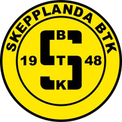
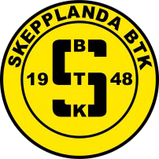

Sponsring är en del av vår marknadsföring med syfte att stärka vårt varumärke, gagna affärer samt bidra till de övergripande målen nås. Den skall vara till nytta för företaget, kunderna och/eller medarbetarna.
Sponsring skall vara affärsmässigt betingat med uttalat och definierat syfte och förutsätter konkreta motprestationer som balanserar insatsen.
Sponsringen starkaste egenskap är att den möjliggör en association till ett sammanhang som man som sponsor vill förknippas med, och med mål att förstärka varumärket och företagets relationer.
Vi försöker i den mån det är möjligt sponsra lokala idrottsföreningar med en tydlig inriktning på ungdomsidrott.

 
